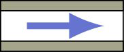
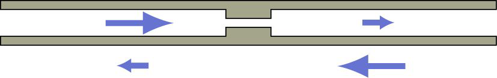

VickylanceTutorials.site40.net
Basic Electronic Fundamantals Tutorial
Before we begin this tutorial, I would like to say a few words about whom this tutorial is focused on and what are the things it will cover.
This tutorial is focused on hobbyists who would like to make some electronic projects and students who would like to make some electronic projects for their school. Now let us see what are the topics this tutorial will cover.
Contents:-
- A good Intro:-
Basic Definitions:
• Electricity - Think of electricity flowing like water in a pipe. The analogy to water is not perfect, but it helps. Electrons are present and quite moveable in every conductor. Electricity is the ordered flow of electrons in a conductor.

• Conductors - keep loose grip on their electrons and allow electrons to move freely. Metals are usually good conductors. eg:-Copper, Aluminium, Iron, etc.
• Insulators - keep close hold of their electrons and do not allow free movement of electrons. Glass, wood, plastic, mica, fiberglass and air are good insulators. eg:-Mica, Oil, Paper, wood, etc.
• Voltage/Electromotive Force (EMF) - Voltage is like pressure inside a tank filled with water. It is measured in Volts, (V).
• Current - It is the flow of electrons through a wire just like the flow of water through a pipe. It is measured in amperes, (A).
• Resistance -It is the ability to oppose an electrical current. Almost everything that conducts electricity has a resistance. It is measured in, (Ohms).

• Conductivity -It is the ability to aid the flow of an electrical current. Everything that conducts electricity has a conductivity. It is measured in, (mhos).
Basic Components:
• Voltage Source - A voltage source is like a tank filled with water, with the fact that instead of water it is filled with electrons ready to flow. It has two terminals (+ and -). Some examples are car batteries (12 volts DC), D cell batteries (1.5 volts DC) and a wall socket (120 volts AC).
Basic Equipments:
• Battery/Source -
• Multimeter -
• Soldering Iron & Solder -
• Single & MultiStranded wires -
• Breadboard -